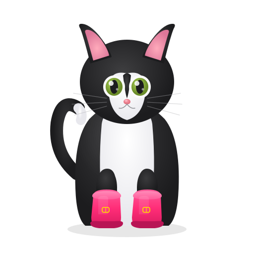

Right now, Preply asks you to pick a tutor from a list.
Imagine instead: you spend 90 seconds talking about why you're obsessed with Argentine tango, and the platform builds your entire Spanish journey around that obsession.
of language learners quit
within 3 months
Not because learning is hard.
Because no one really understood what they care about.
Source: Preply 2024 Language Learning Survey, Cambridge Assessment English Retention Studies
Streak
Free Trial
Polyglot Phase
Listen Later
People remember significantly more
when learning connects to what they love
Hidi & Renninger (2006), Review of Educational Research: triggered situational interest is the strongest predictor of sustained learning motivation.
Hulstijn & Laufer (2001): high-involvement tasks produce up to 2x better vocabulary retention.
Krashen (1982), Affective Filter Hypothesis: low anxiety + high motivation = faster language acquisition.
The real question was never "how do we teach?"
It was "how do we discover what someone cares about?"
AI Discovery Coach
A voice-first AI agent that interviews learners in natural conversation to map their passions, needs, and learning style. In just a few minutes.
Voice
Real-time conversation powered by Agora ConvoAI
Brain
Interest classification by OpenAI, structured profile output
Feel
Cognitive signals by Thymia detect engagement and confidence
This was impossible 12 months ago
Real-time Voice AI
Agora ConvoAI enables sub-300ms conversational agents
Dirt-cheap Inference
GPT-5.4 at $0.15/1M tokens makes per-student AI viable
Voice-native Users
Siri, Alexa, ChatGPT Voice trained a generation to talk to software
Three trends converging right now. Miss this window and someone else builds it.
Let's try it. Right now.
Open demo (local) → | botas.vercel.app →
Click "Find your tutor" to start the voice interview
From conversation to curriculum in minutes
The interview produces a Learning Bridge: your passions on one side, your goals on the other, with a personalized personalized plan.
We don't just hear you. We understand you.
In production, Thymia will analyze cognitive signals during the conversation, detecting what no survey can.
Example: engagement spikes when she talks about music, but cognitive load jumps on grammar.
Preply's funnel, supercharged
Better matching
Tutor receives a passion profile before lesson 1, so the first session is never a blank slate
Higher retention
Ed-tech research shows interest-aligned content increases session frequency
Lower churn
Personalized first lesson solves the "why did I book this?" problem
Sources: Hidi & Renninger (2006), Hulstijn & Laufer (2001), Deci & Ryan (2000) Self-Determination Theory, Krashen (1982) Affective Filter Hypothesis, Lally et al. (2010) on habit formation in learning contexts.
How We Built It

The Team
Stop teaching languages.
Start discovering learners.
"Every learner has a passion. Every passion is a lesson."